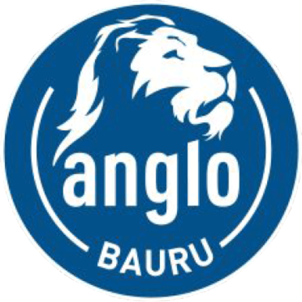

Projetos

Processo Seletivo Equipe Bac Baja
Em julho, a Interage realizou o Processo Seletivo para a Equipe Bac Baja da Unesp Bauru. A Equipe PAC Baja é um projeto de extensão da Faculdade de Engenharia de Bauru que está presente há mais de 20 anos no campus. Além de proporcionar ao aluno de Engenharia o contato com a teoria aprendida em sala, a Equipe possibilita a projeção e construção de um veículo Off-Road para competir nacionalmente.
O projeto realizado foi um grande desafio para a empresa, visto que o número de inscritos era elevado e a gestão atual nunca havia desenvolvido um Processo Seletivo deste porte, o que demandou o engajamento de muitos membros da Interage, além de muita dedicação dos mesmos.
O serviço foi dividido em três etapas: dinâmica, entrevistas, e apresentação de cases. Na fase das entrevistas, ocorreu a técnica e a psicológica, cuja divisão foi um grande diferencial no projeto. O Processo Seletivo possibilitou aos membros desenvolvimento de habilidades e capacidades, contribuindo para nossa formação acadêmica. Além disso, o cliente ficou muito satisfeito com o serviço, de modo que alcançou o objetivo ao contratar a Interage.
Orientação Profissional Colégio Novo Anglo
O serviço de Orientação Profissional tem como objetivo assessorar os adolescentes no processo de construção da identidade profissional, considerando o projeto da família, o autoconhecimento, a realidade de trabalho e as possíveis escolhas profissionais a serem seguidas pelo mesmo. Assim, são realizados encontros semanais no próprio colégio, completando um total de 10 encontros ao final do serviço. Nestes encontros, é proporcionado aos adolescentes momentos de reflexão e aquisição de conhecimentos pertinentes a escolha profissional por meio de dinâmicas e tarefas de casa.
Entre março e maio de 2016, a Interage Jr. realizou o serviço para o colégio Novo Anglo, obtendo grande sucesso. Durante o projeto, foi possível observar o engajamento dos alunos participantes: eles se envolveram nas dinâmicas e atividades propostas e passaram a questionar suas escolhas, as dificuldades envolvidas na inserção do mercado de trabalho e questionar a si mesmos. Ao final do projeto, muitos relataram se sentirem mais seguros para planejar suas escolhas futuras. Tanto os alunos quanto o próprio diretor do colégio transmitiram feedbacks positivos em relação ao projeto.
Projeto de Atendimento ao Trabalho
O projeto que intitulamos de PROAT (Projeto de Atendimento ao Trabalho) tratou-se de uma pesquisa quantitativa realizada pela Interage Empresa Jr de Psicologia, no período de 01 de abril à 05 de agosto de 2016, contratada pela Cáritas Diocesana de Bauru e tendo a Secretaria Municipal do Bem Estar Social como parceira. Foi feito um Diagnóstico Profissional no município de Bauru através da aplicação de um questionário em 167 empresas divididas de acordo com os seus devidos Centros de Referência de Assistência Social (CRAS). A partir das respostas foi possível formular um perfil profissiográfico dos futuros ocupantes dos cargos mais ofertados pelas empresas pesquisadas considerando: faixa etária, nível de escolaridade, competência técnica e características pessoais e comportamentais que são mais importantes para preencher esses cargos. Também foram pesquisados problemas na contratação, principais motivos para demissão dos trabalhadores, dentre outros.
O projeto se justificou pela necessidade da Cáritas Diocesana de Bauru mapear a demanda profissional e identificar os cursos de capacitação mais adequados às demandas atuais dos trabalhadores, a fim de ter conhecimento dos dados das empresas e dar subsídio aos CRAS da cidade de Bauru e aos cursos oferecidos pelo Pronatec. A partir dele, pudemos constatar alguns pontos importantes do mercado de trabalho da cidade para serem criadas intervenções a fim de capacitar trabalhadores desempregados, visando favorecer sua inserção às vagas em aberto nas empresas. O resultado final foi bastante elogiado pelo cliente e já foi renovado para o ano de 2017 visando alcançar o dobro de empresas.

Processo Seletivo da equipe Canarinho Aerodesign
Em maio de 2016, a Interage Jr. realizou o processo seletivo da equipe Canarinho Aerodesign da Unesp Bauru. A equipe de Aerodesign foi criada em 1999, por estudantes da Universidade Estadual Paulista “Júlio de Mesquita Filho” do campus de bauru. Nesses dezoito anos de história, a equipe passou por várias reformulações, divisões e adaptações, tendo mudado seu nome algumas vezes até adotar, novamente, o nome Canarinho.
O Projeto de Extensão Aerodesign visa trazer um crescimento profissional e pessoal para seus participantes. O aluno que entra no projeto passa a lidar com o dia a dia de uma empresa, tendo que trabalhar em equipe, cumprir prazos, se capacitar em alguma área do projeto e gerenciar tempo.
O serviço oferecido pela Interage Jr. consistiu na seleção dos candidatos inscritos, processo posterior ao recrutamento, utilizando técnicas e instrumentos, como, por exemplo: dinâmicas em grupo, apresentação de cases e entrevistas psicológicas, que têm como objetivo investigar e avaliar as habilidades e competências apresentadas pelos candidatos.
O projeto foi bem-sucedido e proporcionou à Interage Jr. conhecer o cotidiano da equipe Canarinho e seu trabalho multidisciplinar. Confira a entrevista que a TV Unesp realizou este ano com a nossa empresa e o depoimento da Lara, capitã da equipe Canarinho sobre os nossos serviços.